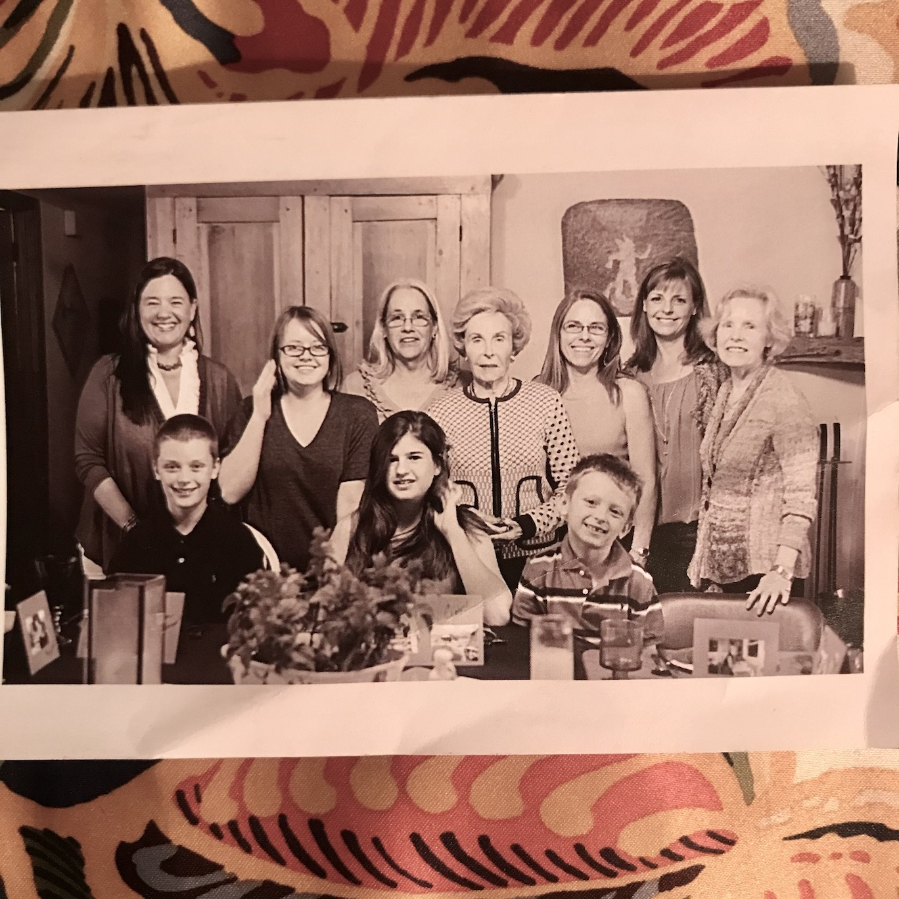
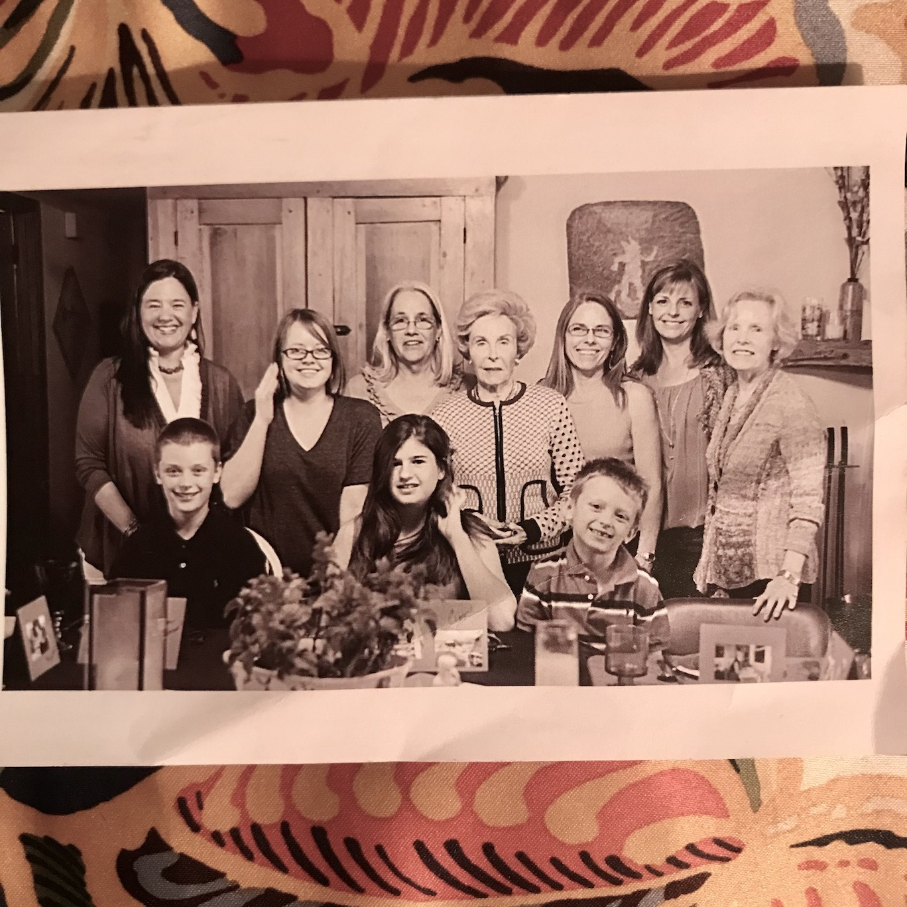

Memorial
Saturday, April 22, 2023
2:00 p.m.
Unitarian Universalist Congregation
Obituary
Cita Riley passed on February 2nd, 2023, peacefully in her home in Santa Fe, NM. She died from cancer. Her cancer moved like an avalanche, quick and devastating—leaving her and her loved ones heartbroken and in shock.
Born Olivia Cora Mason in 1952 in Corpus Christi, Texas, the daughter of Olivia Gouger and Paul Warren Mason; Cita was the third of their three daughters. The family moved to Fort Worth, Texas, when she was in elementary school.
Asking and seeking more of the world she left her hometown of Fort Worth, Texas, to explore living in Austin, New Orleans, Washington DC, Philadelphia, Salt Lake City, and ultimately Santa Fe.
David Riley and Cita married in 1980 (they would eventually divorce). They had two children together, Winston Riley and Hunter Riley.
Cita built her home in Santa Fe and gave generously to the community. She worked as a yoga instructor (after studying in Pune, India), as the executive director of the Santa Fe Youth Symphony, and at the Santa Fe Waldorf School. After retiring, she continued to serve education, volunteering to support local libraries and as a reading and math tutor.
Blessing those around her with a deeply generous spirit and the rare ability to see the world with lightness. Not a frivolous or shallow lightness either, but a thoughtful and caring lightness she nurtured throughout her life. The kind of lightness that helped others bear the weight of living—quick to laugh, fun, adventurous, loving, and deeply kind.
§ § §
Cita is preceded in death by her father, mother, and sister Nancy Hall Mason Johnston. Surviving her are her children, Winston Riley and Hunter Riley, sister Carol Norris, her nieces Ashton Burridge and Christine Warren and their families, her Mason and Gouger cousins, former husband David Riley, housemate and friend Kate Nelson, and partner Jack Zwemer.
Photos
 
